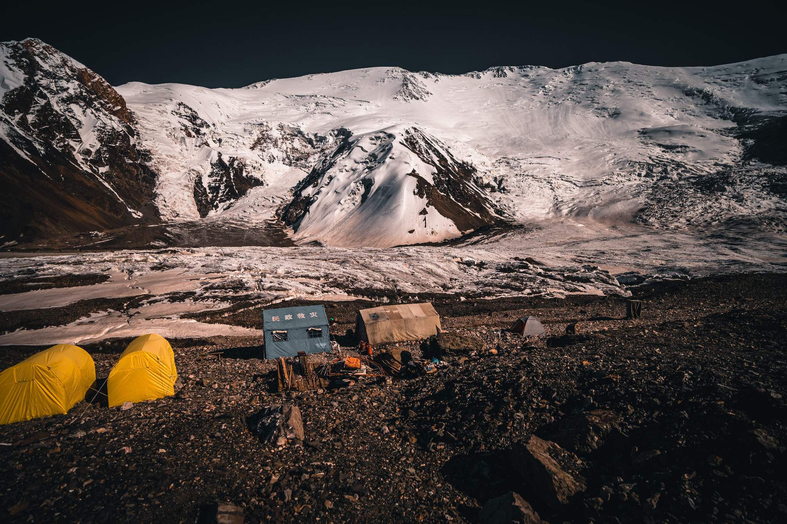
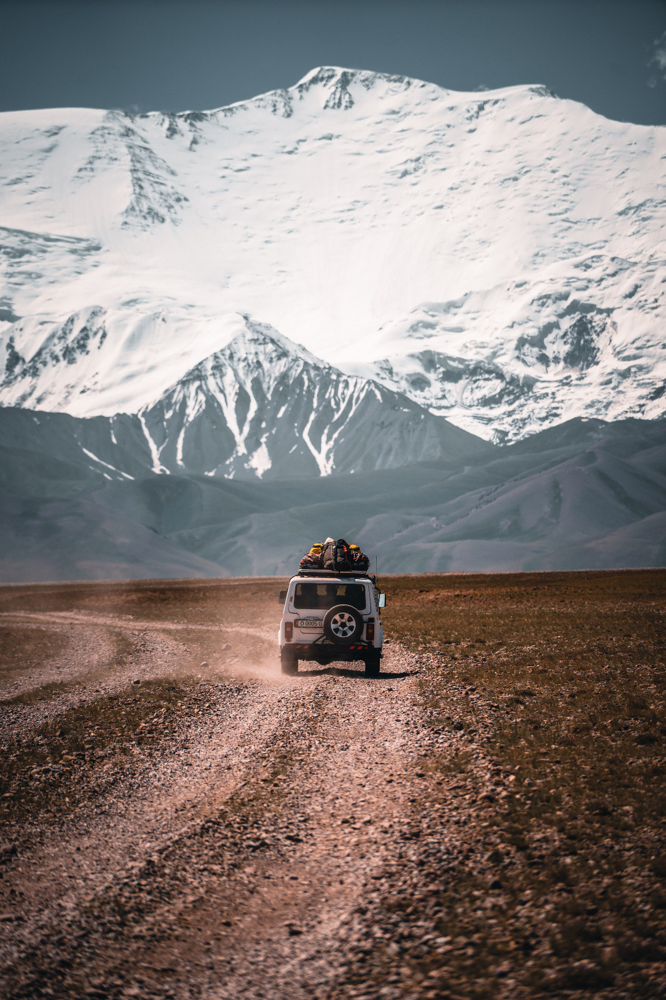

Der Anfang
auf eigenen Wegen.
Touren und Hochtouren seit der Jugend. Berge, Natur und die Neugier auf ferne Länder.

Expeditionen · Trekking · Begegnungen
Seit 1994 in den Bergen – seit 2012 als karitativer Verein in Nepal und anderen Ländern der Welt.
Touren und Hochtouren seit der Jugend. Berge, Natur und die Neugier auf ferne Länder.
 Hochtour
Hochtour
Mit Ngima Grimen Sherpa (selig) zum Singu Chuli, 6501 m. Daraus wächst der karitative Verein.
5642 m · Normalroute.
Erster Versuch am 6422 m hohen Yaupa.
Offizielle Erstbesteigung des Nangamari I (6547 m) durch Remo D., David B. und Hira Gurung. Geplant und durchgeführt durch uns.
 Nangamari I · 6547 m
Nangamari I · 6547 mEin neuer Weg auf einen bekannten Berg.
Drei Jahre, drei Erfahrungen.

Weltrekordversuch Bike – längster Downhill. Geplant, nicht durchgeführt.
Zweiter Versuch. Derselbe Berg, neue Erfahrung.
 Yaupa · 6422 m
Yaupa · 6422 mSkitouren zwischen Vulkanen – weit, wild und einsam.
 Kamtschatka
Kamtschatka
Bergwelt und Begegnungen. Nepal wird immer mehr als nur ein Reiseziel.
Zurück ins Tal – und weiter in den Nationalpark.


Gasherbrum I, 8080 m. Grosse Berge bedeuten Teamgeist, Respekt und Demut.
Eine Expedition in grosser Höhe – mit vielen Bildern, vielen Etappen und einem intensiven Teamerlebnis.




Wieder Nepal. Unterwegs für Landschaften, Menschen und Geschichten.
Hochtouren, Skitouren, Trekking und Reisen seit 1994 – in Nepal und anderen Ländern der Welt.


Aus Begegnungen werden Beziehungen. Aus Reisen entstehen konkrete Projekte vor Ort.
Erzähl uns, was du suchst. Gemeinsam finden wir den richtigen Weg.
REISE ANFRAGEN →